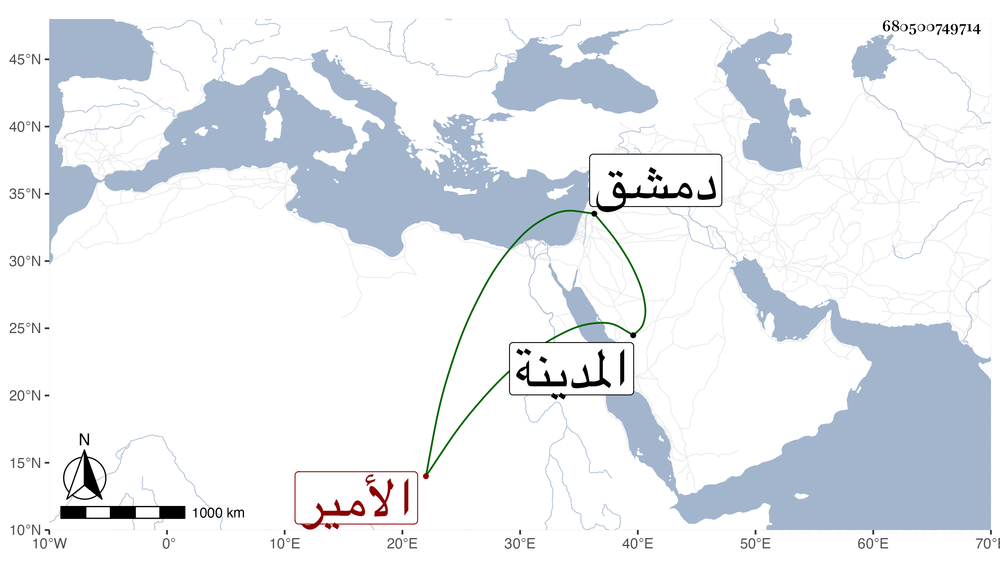

0902Sakhawi.DawLamic.ITO20230111-ara1.EIS1600.680500749714
Biography ID: 680500749714
530
ناضر الدين بن تيمية محمد بن محمد بن محمد بن عبد الله بن عبد الحليم بن عبد السلام وأبوه وابن دقماق الأمير ابن الأمير كان شابا جميلا مات في جمادى الأولى سنة ثلاث وثلاثين . وابن شيخ حرم القدس محمد بن عبد الله بن محمد بن محمد ابن غانم . وابن عبد العزيز بن أحمد المدني الخواص ممن سمع مني بالمدينة . وابن العديم محمد بن عمر بن إبراهيم بن محمد وابن مهنا الحنفي مات في رجب سنة ثلاث وثلاثين أرخه ابن حسان وابن الميلق محمد بن عبد الدائم بن سلامة وسبط ابن الميلق ويلقب بالوزة والجندي رفيقنا في محاورتين هو محمد بن محمد بن سليمان ابن خالد والخطيري محمد بن علي بن أحمد والرماح أحد الأمراء مات في سنة ثمان أرخه العيني وقال انه خلف شيئا كثيرا والزردكاش محتسب دمشق مات في سادس عشر رمضان سنة ستين ومستراح منه أرخه ابن اللبودي والسخاوي محمد بن أحمد بن علي ومحمد بن أحمد آخر لم يسم جده والعقبي محمد بن عبد الله الدمشقي الصوفي والغمري محمد بن حسن بن محمد والفزاري المغربي المؤرخ ناصر بن أحمد بن يوسف ونقيب الجيش وأمير طبر مات في يوم الأربعاء سابع عشرى رمضان سنة ثلاث وأربعين .
